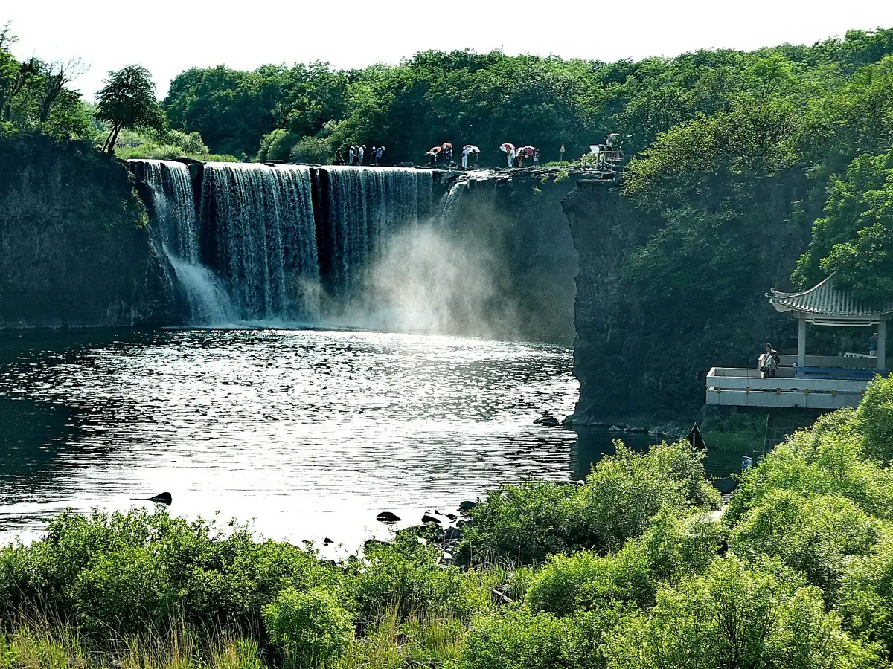

Text version
Episode 01
This episode has not been filmed yet. Once it is finished, the text version will follow the film and be published after the inheritor has reviewed it. For now, this page gives the sourced background to the craft; the small numbers refer to the sources at the end.
Listing
In June 2009 the People’s Government of Heilongjiang Province published the second batch of the provincial list of intangible cultural heritage. “Xiangshui rice cultivation technique” was listed under traditional craftsmanship, nominated by Mudanjiang City.1
In 2015 the Ministry of Agriculture designated the “Ning’an Xiangshui Rice Culture System, Heilongjiang” as one of the third batch of China Nationally Important Agricultural Heritage Systems. This is a list of agricultural heritage, not a list of intangible cultural heritage.4
Where it is grown
In 2007 China’s General Administration of Quality Supervision, Inspection and Quarantine approved Xiangshui rice as a protected geographical indication product (Announcement No. 15 of 2007). The protected area covers five townships of Ning’an: Bohai, Dongjingcheng, Jiangnan, Wolong and Lan’gang.23
Growing conditions recorded in the local standard: at least 2,400 hours of sunshine a year, accumulated active temperature of at least 2,300 °C, a mean annual temperature of 3.8 °C and 550–600 mm of rain a year. Irrigation water comes from Jingpo Lake, on the upper Mudan River, and other clean, unpolluted sources.3


The rice year
Based on the technical requirements for Xiangshui rice as a geographical indication product.2
Records and legend
The account of Bohai in the New Book of Tang lists “the rice of Lucheng” among the things valued in the Bohai kingdom. Scholars disagree about where Lucheng was, and the claim that the rice of Lucheng is Xiangshui rice remains unsettled.56
Local tradition holds that Xiangshui rice was sent to the court as tribute rice in past dynasties. No primary historical source for this has been found; it is a legend.

Sources
- 1People’s Government of Heilongjiang Province, Notice on the second batch of the provincial list of intangible cultural heritage, Hei Zheng Fa (2009) No. 49, in Chinese, 2009-06-13. www.hlj.gov.cn
- 2General Administration of Quality Supervision, Inspection and Quarantine, Announcement approving geographical indication protection for Xiangshui rice, No. 15 of 2007, in Chinese, 2007-01-18. cpgi.org.cn
- 3Mudanjiang Administration for Market Regulation, Geographical indication product: Xiangshui rice, Mudanjiang local standard DB2310/T 114—2023, in Chinese, 2023-10-23. dbba.sacinfo.org.cn
- 4Ministry of Agriculture, Ning’an Xiangshui Rice Culture System, Heilongjiang, third batch of China Nationally Important Agricultural Heritage Systems, in Chinese, 2015-09-28. www.moa.gov.cn
- 5New Book of Tang, Chapter 219, account of Bohai.
- 6Guangming Daily, A short history of rice growing in Northeast China, by Ren Linju, page 13, in Chinese, 2015-11-13. epaper.gmw.cn